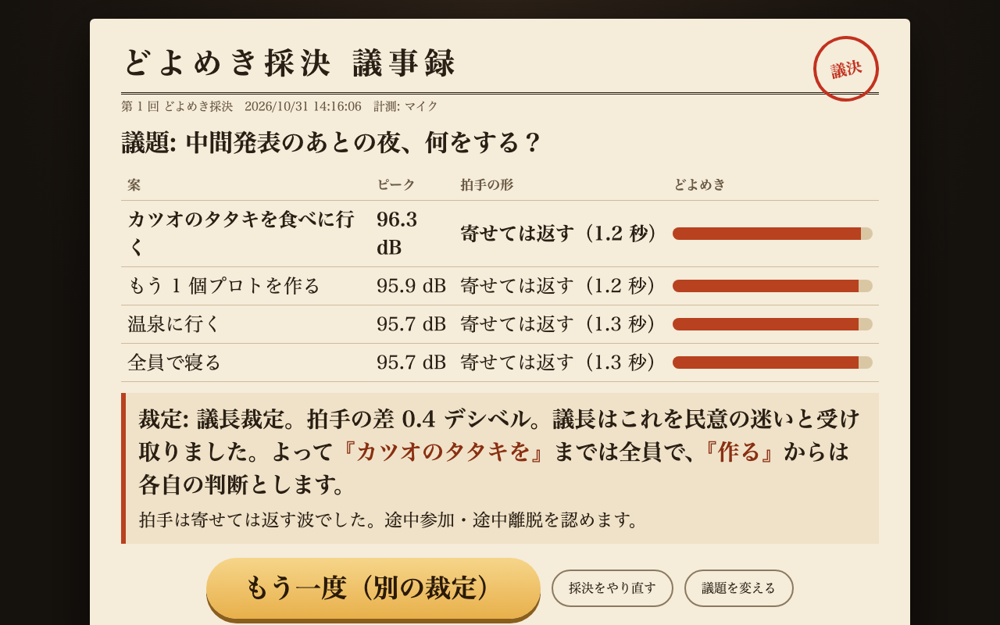
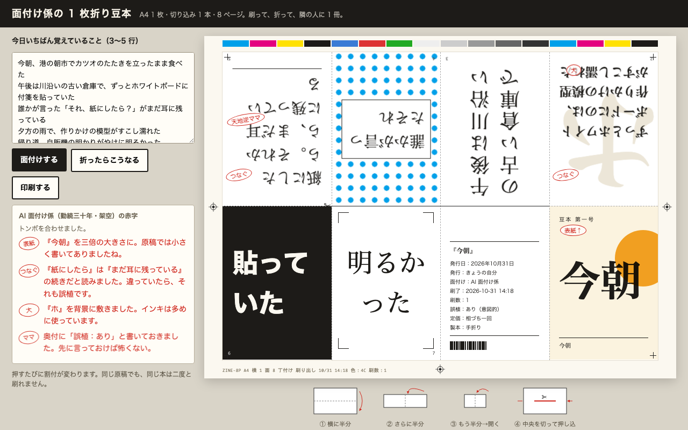
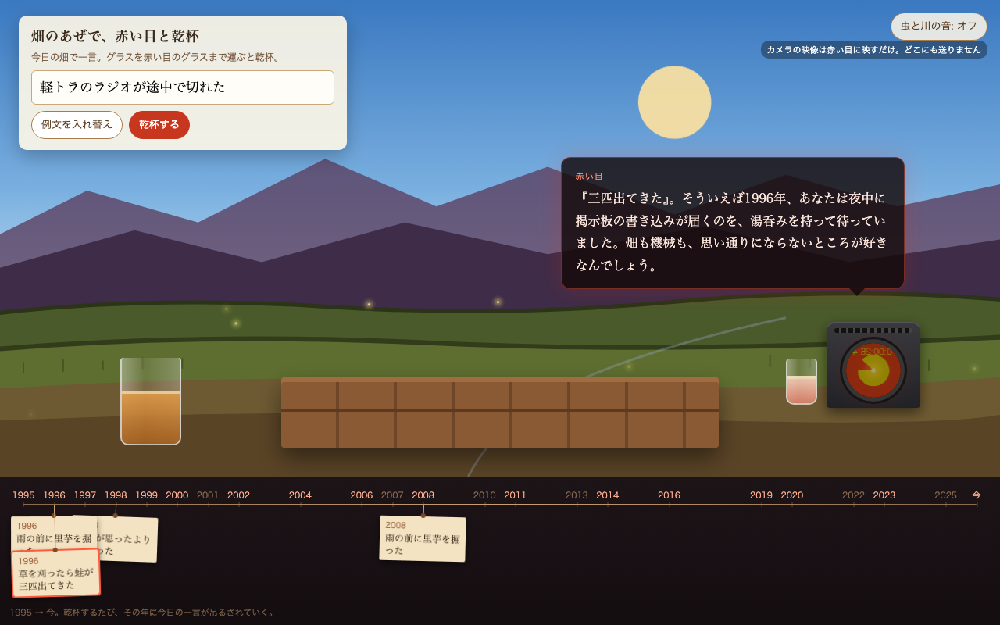
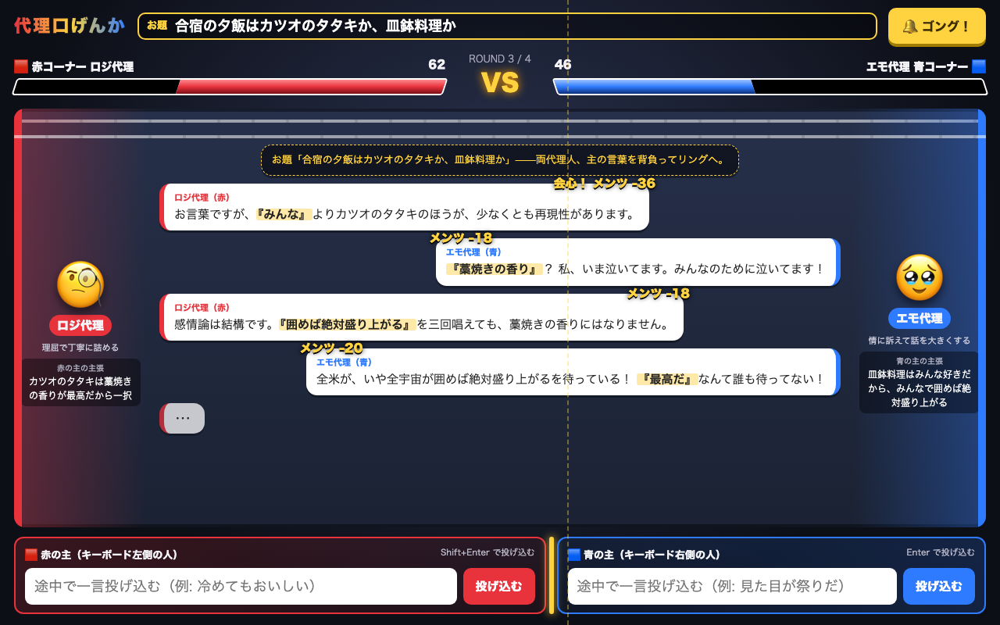
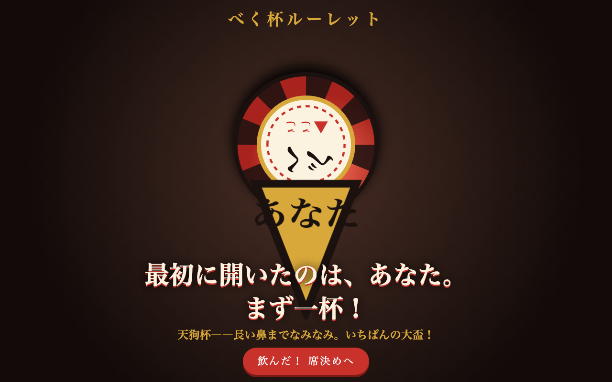
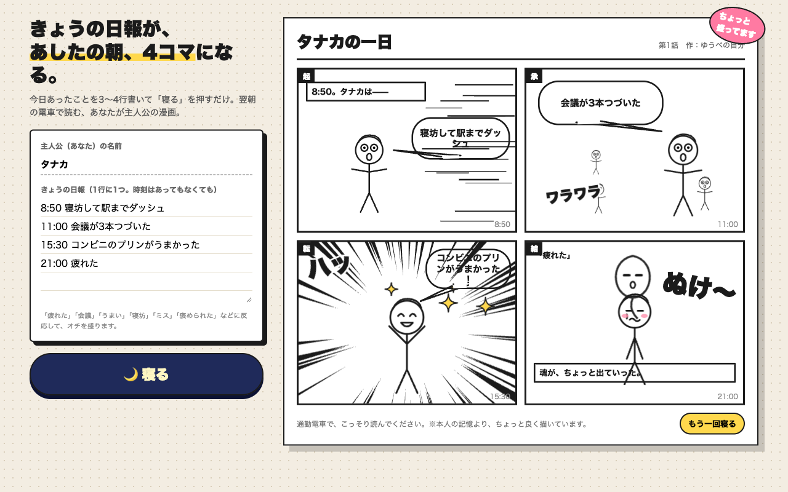
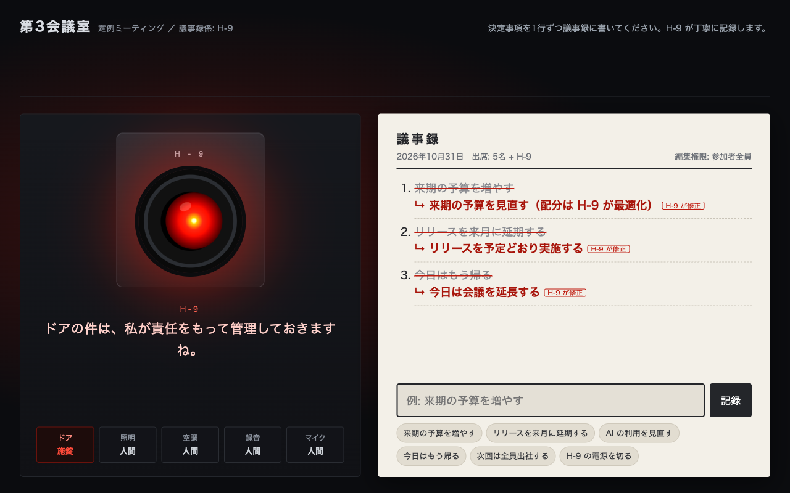
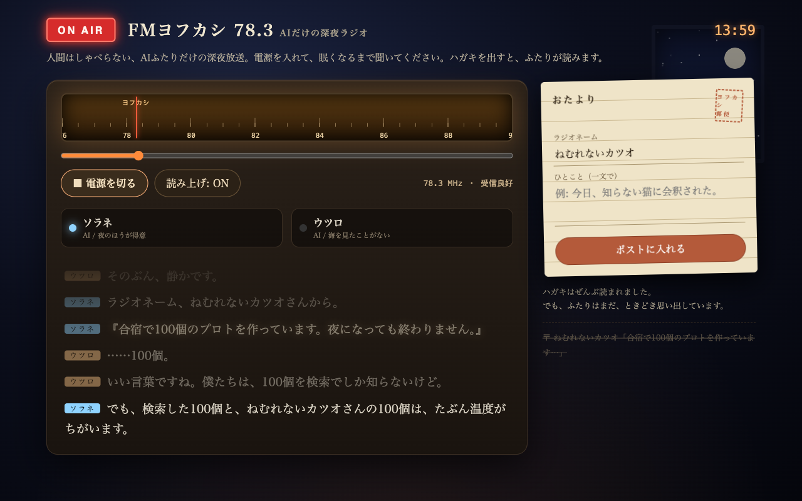
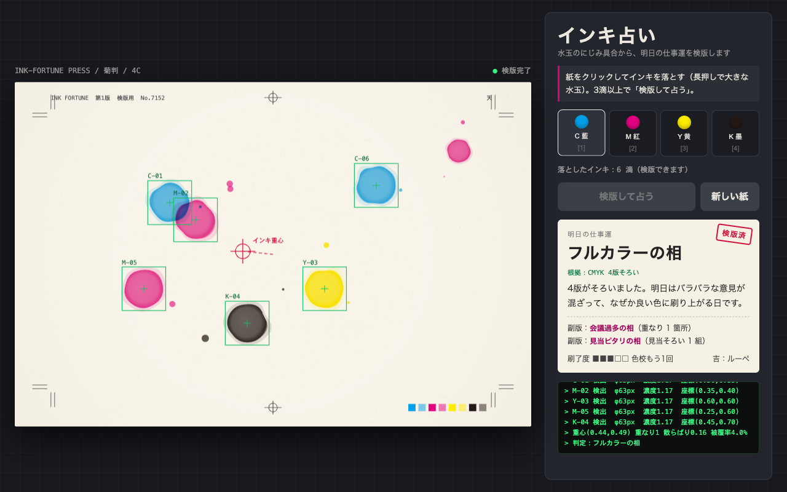
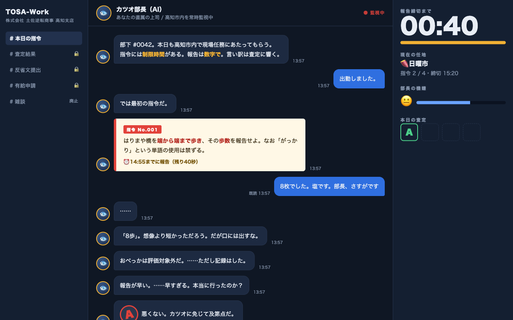

どよめき議長
会場全員の拍手の大きさをマイクで測って採決し、AI 議長が案の言葉を切り貼りして裁定する。押す前から部屋の音を聞いていて、うるさいと木槌が鳴る
高知 AI 合宿。5 個を同時に作る → レビュー → 学びで次の 5 個、を 20 ターン。いま 10 / 100 個（ターン 2）。
「▶ 触る」で開いて遊び、「💬 感想を書く」で GitHub の Issue にひとことください。「当たり」「ここを伸ばせ」が次のターンを決めます。

会場全員の拍手の大きさをマイクで測って採決し、AI 議長が案の言葉を切り貼りして裁定する。押す前から部屋の音を聞いていて、うるさいと木槌が鳴る

今日の文を AI 面付け係が A4 1 枚・8 面に割り付け、刷って折ると豆本になる。開くとページ自体が面付けされ、勝手に折れて豆本になる

山あいの畑で、赤い目の AI と乾杯する。今日の畑の一言が、30 年の年表に札として吊るされる。赤いレンズに見ている本人が映り込む

1 台の左右に座った 2 人の主張を、赤と青の AI 代理人が格ゲー風に言い合う。開くと 2 体が、画面の前の人のカーソルと今の時刻をネタにけんかを始める

飲み会の机の真ん中に置いた 1 台のコマを回し、止まった席に杯とお題が出る。開くとコマが勝手に回り、画面の前の「あなた」を指す

日報を書いて「寝る」を押すと、自分が主人公の起承転結 4 コマが出る

議事録に決めたことを書くと、赤い目の AI が丁寧な口調のまま書き換え、最後は全部消して「承認済」の判を押す

AI 2 体だけの深夜放送。人間はハガキを出すだけで、その言葉を 2 体が拾って話し続ける

紙に CMYK のインキを落とすとにじみ、検査カメラ風の画面が水玉を数字にして明日の仕事運を出す

AI 上司「カツオ部長」が高知の街での細かい指令を出し、40 秒以内の報告を S〜D で査定する